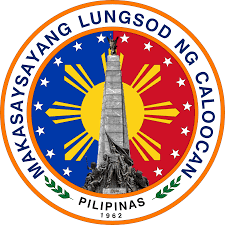

Welcome!
Caloocan City is one of the most historically significant cities in the Philippines. Known as the "Historical City," it played a crucial role during the Philippine Revolution and continues to be a center of culture, economy, and education. This website explores its history, heroes, and the development of its communities.
